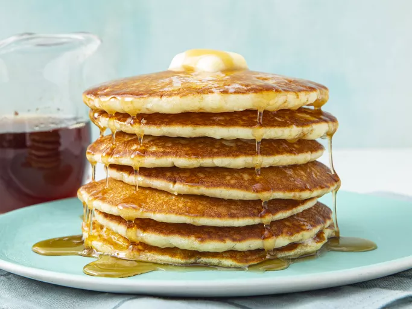

Buttermilk Pancake
Buttermilk Pancake

Buttermilk Pancake
Description
A very light and fluffy pancake recipe that requires fresh buttermilk, but it's the best I've ever made!
As convenient as a store-bought mix can be, every home cook needs a good buttermilk pancake recipe in their repertoire.
Ingredients
- Flour
- Sugar
- Leaveners
- Salt
- Buttermilk
- Milk
- Eggs
- Butter
Steps
- Mix the dry ingredients: Combine flour, sugar, baking powder, baking soda, and salt in a large bowl.